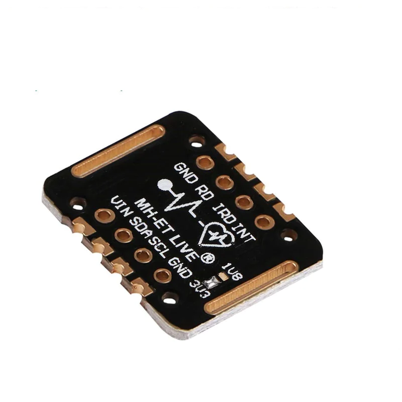

26. Cảm biến nhịp tim và oxy trong máu MAX30102:
{kind=link}
Cảm biến nhịp tim và oxy trong máu Max30102 là một mô-đun đo nhịp tim và oxy trong máy tích hợp. Nó bao gồm đèn LED bên trong, bộ tách sóng quang, các bộ phận quang học và các thiết bị điện tử có tiếng ồn thấp với khả năng loại bỏ ánh sáng xung quanh.
Cảm biến nhịp tim và oxy trong máu MAX30102 MH-ET LIVE có thiết kế tiện dụng, dễ dàng đeo vào ngón tay, cổ tay để đo nhịp tim và nồng độ Oxy trong máu. Cảm biến này thích hợp cho nhiều ứng dụng liên quan đến y sinh.
Cảm biến sử dụng phương pháp đo quang phổ biến hiện nay với thiết kế và chất liệu mắt đo chuyên biệt từ chính hãng Maxim, cho độ chính xác và độ bền cao. Cảm biến sử dụng giao tiếp I2C với bộ thư viện có sẵn, rất dễ sử dụng.
1. Thông số kỹ thuật:
IC chính: MAX30102.
Đo được nhịp tim và nồng độ Oxy trong máu.
Điện áp sử dụng: 3.3~5VDC.
Nhỏ gọn, siêu tiết kiệm năng lượng, thích hợp cho các thiết bị đo nhỏ gọn, Wearable Devices.
Giao tiếp: I2C, mức tín hiệu TTL.
Kích thước: 20.6 x 15.5mm
2. Kết nối
Chuẩn bị các thiết bị như sau:

|

|
|
|---|---|---|
Máy tính lập trình Yolo:Bit |
Mạch mở rộng cho Yolo:Bit |
Cảm biến nhịp tim |
Mua tại các cửa hàng linh kiện điện tử |
Kết nối:
Cảm biến nhịp tim và oxy trong máu MAX30102 sử dụng giao tiếp I2C, giúp bạn dễ dàng giao tiếp với Yolo:Bit thông qua mạch mở rộng với các chân tương ứng.
{kind=link}
Hướng dẫn nối dây cảm biến nhịp tim với mạch mở rộng
3. Lập trình Yolo:Bit với màn hình TFT trên OhStem App:
Để làm việc với cảm biến nhịp tim MAX30102, chúng ta phải cần thêm thư viện mở rộng MAX30102, bạn hãy copy đường dẫn sau: https://github.com/AITT-VN/yolobit_extension_max30102 và dán vào mục mở rộng để tải thư viện mở rộng.
{kind=link}
Thư viện chỉ gồm 1 khối lệnh nhỏ để hiển thị giá trị của cảm biến. Bạn có thể thử 1 chương trình mẫu để hiển thị nhịp tim và oxy trong máu ra cửa sổ nhập lệnh như sau:
{kind=link}
4. Hướng dẫn lập trình Arduino
Mở phần mềm Arduino IDE. Xem hướng dẫn lập trình với Arduino tại đây.
Copy đoạn code sau, click vào nút
Verifyđể kiểm tra lỗi chương trình. Sau khi biên dịch không báo lỗi, bạn có thể nạp đoạn code vào board.
#include “Yolobit.h”
#include <Wire.h>
#include "MAX30105.h"
#include "heartRate.h"
Yolobit yolobit;
MAX30105 particleSensor;
const byte RATE_SIZE = 4; //Increase this for more averaging. 4 is good.
byte rates[RATE_SIZE]; //Array of heart rates
byte rateSpot = 0;
long lastBeat = 0; //Time at which the last beat occurred
float beatsPerMinute;
int beatAvg;
void setup()
{
Serial.begin(115200);
Serial.println("Initializing...");
// Initialize sensor
if (!particleSensor.begin(Wire, I2C_SPEED_FAST)) //Use default I2C port, 400kHz speed
{
Serial.println("MAX30105 was not found. Please check wiring/power. ");
while (1);
}
Serial.println("Place your index finger on the sensor with steady pressure.");
particleSensor.setup(); //Configure sensor with default settings
particleSensor.setPulseAmplitudeRed(0x0A); //Turn Red LED to low to indicate sensor is running
particleSensor.setPulseAmplitudeGreen(0); //Turn off Green LED
}
void loop()
{
long irValue = particleSensor.getIR();
if (checkForBeat(irValue) == true)
{
//We sensed a beat!
long delta = millis() - lastBeat;
lastBeat = millis();
beatsPerMinute = 60 / (delta / 1000.0);
if (beatsPerMinute < 255 && beatsPerMinute > 20)
{
rates[rateSpot++] = (byte)beatsPerMinute; //Store this reading in the array
rateSpot %= RATE_SIZE; //Wrap variable
//Take average of readings
beatAvg = 0;
for (byte x = 0; x < RATE_SIZE; x++)
beatAvg += rates[x];
beatAvg /= RATE_SIZE;
}
}
Serial.print("IR=");
Serial.print(irValue);
Serial.print(", BPM=");
Serial.print(beatsPerMinute);
Serial.print(", Avg BPM=");
Serial.print(beatAvg);
if (irValue < 50000)
{
Serial.print(" No finger?");
}
Serial.println();
}
Note
Giải thích chương trình: Sau khi chạy chương trình, thông tin vị nhịp tim sẽ được hiển thị trên cửa số Serial